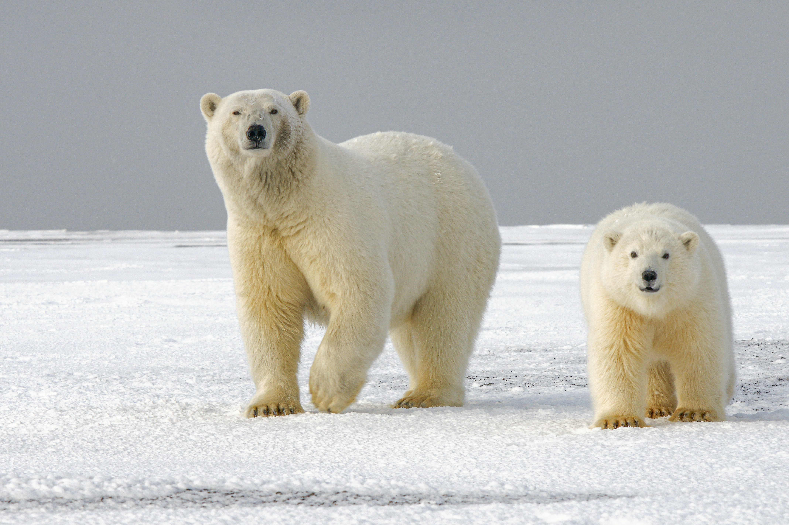

Dates: Aug 2022 - Jan 2023
- Ran job scripts for analyzing hybridization of Polar Bears to Brown Bears
- Used short read Polar Bear samples mapped to long read Brown Bear genome
- Generated recombination map
- Analyzed quality of process (QualiMap and MultiQC reports)
- Presented to research faculty about process & findings